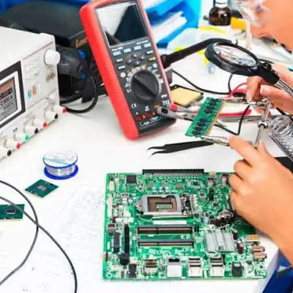

Who is Lynn Conway?
Lynn Conway was born on January 2nd, 1938 in Mount Vernon, New York and she died on June 9th, 2024 in Jackson, Michigan due to complications regarding heart failure (Britannica). In the fifties, Lynn attended Massachusetts Institute of Technology (MIT), but she dropped out before she was able to get a degree from there; Lynn then attended Columbia University to which she earned her bachelor’s and master’s degree in electrical engineering (Britannica). In her professional life, she had worked for IBM, but after being fired, she then worked at Xerox Palo Alto Research Center, where she made significant contributions to technology (Britannica). Later, Lynn was given the opportunity to teach a “seminal microchip design course” at MIT, and she then taught at the University of Michigan, where she became a professor and also an associate dean

Lynn was underrepresented in the world of technology and computing due to her transitional, gender identity transformation, to which she was prejudiced and undermined of her ability to be successful throughout her academic and professional career (Britannica). At MIT, she attempted to go through gender identity transition; however, this was brought to the dean’s attention at MIT’s medical school and then the dean had considered this a concern for Lynn, so she later dropped out of MIT (Britannica). Her academic career was not over as she was still able to graduate at Columbia. During her professional career at IBM, it was unfortunately cut short due to the reveal of her successful gender affirming surgery; Lynn also divorced her wife and became estranged from her family during this time as well (Britannica). Lynn was able to come back by working at Xerox Palo Alto Research Center where she was accepted, and she later married an engineer by the name of Charles Rogers (Britannica). Over the years, she had noticed people were taking credit of her work, but she was troubled on speaking up without revealing the fact she was transgender (Britannica). She then overcame this fear by speaking up and also using her website to speak out on the issues of gender identity and transitioning (Britannica).
One of Lynn Conway’s contributions to computer science is that she laid the groundwork for modern superscalar computer architecture and very large scale integration (VLSI) microchip design. This relates back to the design thinking pillar of informatics because she made microchip design easier to understand and teach for those without a physics background. This is humanized into technologies that we all use today due to later generations of chips based on her foundational work being used to power our cars, phones, and computers for just a few examples.
Lynn, laying the groundwork for modern superscalar computer architecture, directly connects to processors that power nearly every modern smartphone, computer, and AI data center that we see today. We can see the future being impacted from her work within the current AI data centers popping up across the world, requiring even greater chip production, which will continue to grow exponentially over our lives. This is because her simplification of microchip design has made production much faster and more efficient.
We decided to choose Lynn Conway out of any other innovator because of her impressive work in simplifying fundamental hardware production in computing as well as of her contributions to computer functionality. Our other options included Margeret Hamilton, Katherine Johnson, Joy Buolamwini, and Chieko Asakawa. Lynn Conway eventually became our top choice because of her impression innovations, despite going through challenging underrepresentation and upbringing throughout her life.

Works Cited
Matthias, Meg. “Lynn Conway.” Encyclopedia Britannica, Encyclopaedia Britannica, Inc, 5 June 2026, https://www.britannica.com/biography/Lynn-Conway. Accessed 12 Sept. 2026.
Layout by Bootstrap